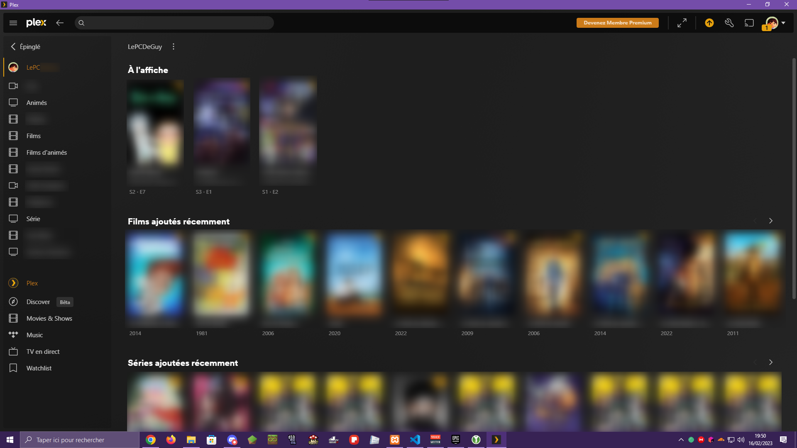

J'ai une machine dédiée pour ce service, Plex mon super serveur multimédia, il est installé sur Ubuntu Serveur et j'ai pas mal de choses dessus que je ne pourrais malheureusement pas dire ici car je pourrais me retrouver derrière les barreaux disons
Pour vous expliquer ce qu'est Plex au cas où vous ne seriez pas ce que c'est, Plex est un logiciel de gestion de contenu multimédia qui permet de stocker, organiser et diffuser des vidéos, des photos et de la musique sur différents appareils connectés à Internet.
Le logiciel Plex utilise une interface conviviale pour regrouper et organiser tous les fichiers multimédias stockés sur un ordinateur ou un serveur distant, permettant ainsi aux utilisateurs d'accéder facilement à leur contenu depuis n'importe quel appareil connecté à Internet, tels que des ordinateurs, des téléviseurs intelligents, des tablettes, des smartphones et des consoles de jeux.
Plex dispose également de fonctionnalités avancées telles que la prise en charge de la lecture en continu de contenu en haute qualité, la possibilité de synchroniser le contenu sur plusieurs appareils, la gestion des sous-titres et des playlists, ainsi que la possibilité de partager des bibliothèques multimédias avec d'autres utilisateurs.
Voilà pour ce qui est d'expliquer ce que c'est que Plex, bon c'est long je sais mais il fallait du contenu à cette page
Voici juste ici le lien du site de Plex : https://www.plex.tv/
Et juste là l'interface de Plex :
